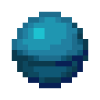
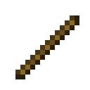
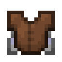
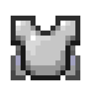
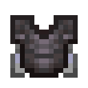
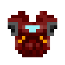

物品与装备
内置物品包括添翼胸甲、强化装备、主题盔甲、变形帽子和特殊道具，通过合成、锻造或商店获取。
便利配方


便利配方提供鞘翅与海洋之心复制，以及常用材料制作。完整摆放见基础配方。
| 产物 | 材料与结果 |
|---|---|
| 鞘翅复制 | 消耗下界合金碎片、下界之星和幻翼膜，返还原鞘翅并得到一件新鞘翅；两件均剩 1 点耐久 |
| 海洋之心复制 | 海洋之心与八个海晶砂粒合成，得到 2 个海洋之心 |
| 箱子与木棍 | 接受原版原木标签；8 个原木制作 4 个箱子，2 个原木制作 16 个木棍 |
| 投掷器与发射器 | 深板岩圆石制作投掷器；投掷器与弓的材料制作发射器 |
添翼胸甲



获取
在锻造台依次放入下界合金升级锻造模板、胸甲和鞘翅。皮革、锁链、铜、铁、金、钻石和下界合金胸甲均可添翼。材料各消耗 1 件。
皮革、锁链、铜、铁、金、钻石和下界合金胸甲均可添翼，见添翼配方。
用途与属性
- 添翼后保留胸甲种类，最大耐久为 592，掉落物具有抗火属性。
- 胸甲获得滑翔能力，显示对应材质的装甲与翅膀，以及「添翼」提示。
- 皮革可染色，胸甲图标支持十一种纹饰材料。
- 结果保留原有名称、附魔、损耗耐久、纹饰、染色与强化属性。原版钻石胸甲升级为下界合金时，已有滑翔能力保留。
穿戴在胸部装备槽后可以滑翔。飞行损耗按工具类耐久附魔规则计算，受击损耗按盔甲规则计算。
装备模型与提示组件
物品模型为 contribution:winged/<材质>，使用原版 smithing_transform 继承基底组件并设置结果字段。灰色非斜体「添翼」提示合并已有描述；256 行描述已满时保留原描述。
耐久与修理
添翼胸甲同时承担飞行和护甲的耐久损耗。滑翔与受击分别进行耐久判定；损坏后先按装备材质修理，再继续使用。
装备强化
获取
在锻造台依次放入下界合金升级锻造模板、待强化装备和同部位下界合金装备。结果保留原装备种类、名称和皮肤，耐久与属性设置为下表数值，并显示「下界合金强化」提示。
各材质的对应材料见强化配方。
| 装备 | 最大耐久 | 属性 |
|---|---|---|
| 头盔与海龟壳 | 407 | 护甲 3、韧性 3、击退抗性 0.1 |
| 胸甲 | 592 | 护甲 8、韧性 3、击退抗性 0.1 |
| 护腿 | 555 | 护甲 6、韧性 3、击退抗性 0.1 |
| 靴子 | 481 | 护甲 3、韧性 3、击退抗性 0.1 |
| 剑 | 2031 | 攻击伤害修正 +7，攻击速度修正 −2.4 |
| 镐 | 2031 | 攻击伤害修正 +5，攻击速度修正 −2.8 |
| 斧 | 2031 | 攻击伤害修正 +9，攻击速度修正 −3 |
| 锹 | 2031 | 攻击伤害修正 +5.5，攻击速度修正 −3 |
| 锄 | 2031 | 攻击伤害修正 0，攻击速度修正 0 |
| 矛 | 2031 | 攻击伤害修正 +4，攻击速度修正约 −3.130435；刺击参数使用下界合金矛定义 |
用途与属性
- 工具面板的总伤害与速度包含玩家基础值。
- 镐、斧、锹、锄强化后具备下界合金级采集能力。
- 挖掘速度仍依材质而定：木 2、石 4、铜 5、铁 6、金 12、钻石 8；修复使用原材质。
- 添翼与强化可按任意顺序进行，滑翔能力和两种提示均保留。重复强化将属性设置为同一数值。
主题盔甲

获取
马克六型、纳米和量子盔甲均以对应下界合金部件为基底。普通款与主题材料无序合成，翼装胸甲在锻造台制作，见主题盔甲配方。
马克六型在游戏内显示为「Mark 6」，其物品名称保持原样。
| 主题 | 主题材料 | 部件 |
|---|---|---|
| 马克六型 | 铁锭 | 头盔、胸甲、护腿、靴子和翼装胸甲 |
| 纳米 | 恶魂之泪 | 同上 |
| 量子 | 末影珍珠 | 同上 |
用途与属性
主题盔甲显示对应的装甲外观和史诗稀有度，战斗属性沿用基底。制作保留已有附魔、修复惩罚和损耗耐久。普通款显示装甲；翼装款同时显示翅膀并提供滑翔能力。
素材来源
主题纹理由项目素材提供，纳米和量子设计的原型注明来源为 Industrial Craft 2。素材归属与使用说明见 code/THIRD_PARTY_NOTICES.md。
变形帽子
在锻造台使用线作模板、配方指定的装备作基底，并放入对应外形材料。帽子保留基底其他组件，占用头部装备槽，最大堆叠数为 1。穿戴后显示所选模型。全部 37 种对应关系见帽子配方。
特殊道具
| 物品 | 获取与行为 |
|---|---|
| 公示喇叭 | 用铁锭和木棍合成。主手使用 0.2 秒后公示副手物品与数量，消耗 1 件，冷却 10 秒。 |
| 哑炮 | 8 个火药围绕水桶合成 8 件，返还空桶。使用 0.1 秒后播放点燃音效，冷却 1 秒。 |
| 头颅采集 | 主手精准采集镐，副手任意头颅；对另一玩家造成直接有效伤害后，将副手 1 个头颅转为该玩家的头颅。 |
相关条目
每个配方的准确摆放、材料数量、产量与组件见配方目录。公示喇叭、哑炮、头颅采集和原初武器的获取/使用步骤见特殊道具教程，全部可选皮肤见皮肤目录。
加载方式与兼容
装备和道具使用原版物品标识符，配方在服务器加载世界时启用。客户端安装同版模组或加载服务器资源包后显示外观。已有物品保留制作时的数据，按当前配方重新合成或锻造可获得新结果。
补充资料
资源数据
数据格式与资源数量
| 项目 | 值 |
|---|---|
| 数据包格式 | 121.0 |
| 资源包格式 | 97.1 |
| Java | 25 |
| 配方数 | 128 |
| 玩家标签 | 45 |
| 进度定义 | 164 |
| 装备定义 | 13 |